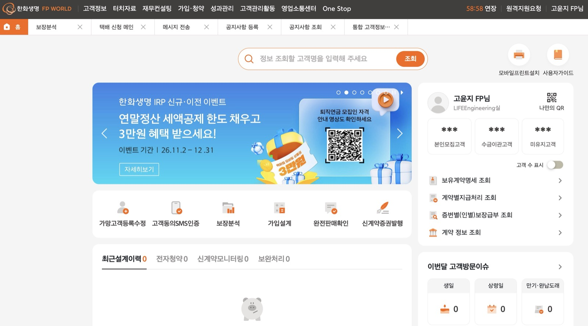
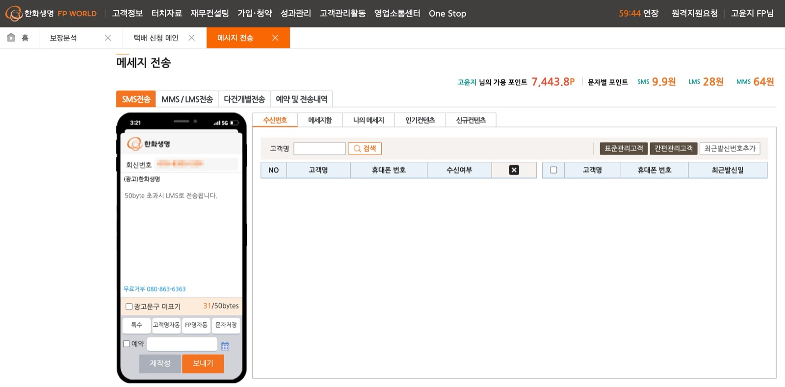

화면으로 보는 FP포털
FP가 로그인하면 가장 먼저 보는 홈과, 고객에게 문자를 보내는 메시지 전송 화면입니다.


운영 화면이라 개인정보(휴대폰 번호)는 가렸습니다.
01
FP 홈 대시보드
개요
FP가 로그인 후 가장 먼저 보는 화면으로, 그날 챙겨야 할 고객과 업무를 바로 확인하고 주요 메뉴로 이동하는 시작점입니다.
담당 업무
- 담당 고객 현황(본인모집 · 수금이관 · 미유지 고객)과 계약 조회 바로가기
- 이번 달 고객 방문 이슈 — 생일 · 상령일 · 만기 · 완납 도래 고객 집계
- 최근 설계 이력 · 전자청약 · 신계약 모니터링 · 보완처리 현황
- 가망고객 등록, 고객동의 SMS 인증, 보장분석, 가입설계 등 업무 바로가기
02
고객 메시지 전송
개요
FP가 담당 고객에게 안내 · 영업 문자를 보내는 화면입니다. 문자 발송에는 FP 개인 포인트가 쓰이고, 광고성 문자에는 법적 표기 의무가 따릅니다.
담당 업무
- SMS · MMS/LMS · 다건 개별 전송, 예약 전송과 전송 내역 조회
- 문자 종류별 포인트 차감과 가용 포인트 표시
- 광고 문구 · 수신거부 번호 자동 표기, 50byte 초과 시 LMS 전환
- 고객명 · FP명 자동 치환, 메시지함 · 나의 메시지 · 인기 컨텐츠 불러오기
- 수신번호 검색 — 표준 · 간편 관리고객, 최근 발신번호
03
영업 지원 화면
담당 업무
- 공지사항 등록 · 조회
- 택배 신청
- 통합 고객정보